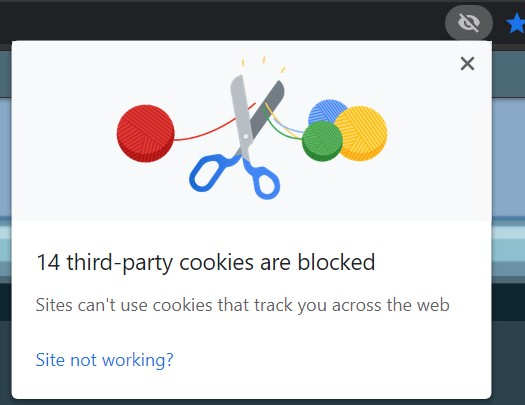
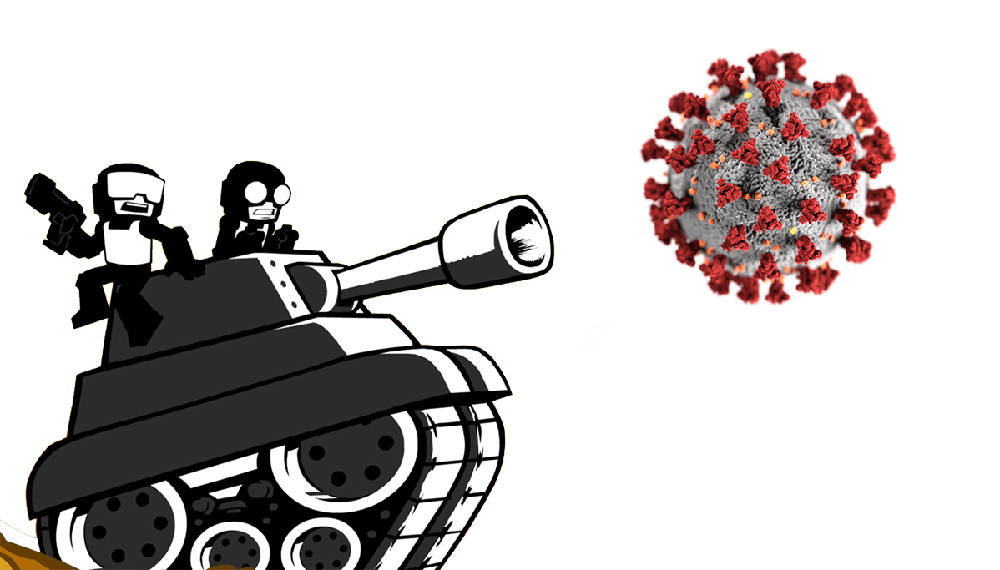

The Importance of your privacy:
Your personal information is incredibly important and you would be surprised at the amount of information that websites gather and pass on at the click of a button. Privacy has been one of the greatest modern ethical arguments as your private information is immensely valuable to companies, governments and individuals with malicious intent.
Terms and conditions in privacy
One of the many ways that people give away more information than intended, is through the use of terms and conditions. These are massive scrawls of legal text that companies make users trudge through, and usually skip reading, in order to use various products and services. However, they also act to hide crucial details which could cost you your privacy, such as monitoring what you click on and sending it away for profit. One of the most alarming examples of unintentionally giving away personal information include how social media sites can legally distribute any information you submit; so keep in mind, don’t upload any information that you are unwilling to share with the world, you may not have a say in the matter. You should always be wary when accepting these terms and conditions and be on the lookout for suspicious clauses, especially when using products from less reputable companies.
Another recent focus of privacy has been locational data and cookies. Locational data does what it says on the box, it can track your location when enabled and can send that information to companies. You have to explicitly give permission for this but this will then abide by terms and conditions so it may track you in unpreferable ways e.g., for longer than anticipated or to a higher degree of certainty. Make sure to only give your locational data away when needed and to trusted parties as it can be a valuable commodity. Cookies can also track you, but through the web. Essentially, they can track some of your browsing history on a page along with your identity/preferences; in order to customize pages to you. This can sometimes be beneficial e.g. dark mode if you prefer that. However, it can also be concerning as in the past, these have been able to track your history over multiple websites and whilst in the UK they have been limited by laws as a reaction, no such laws exist in the US. Cookies also used to have to be explicitly allowed but now it is assumed a user will accept to a certain extent.
These are just 2 main examples of the many ways companies can take away your privacy without you being any the wiser, so be careful with what information you are giving away about yourself on the internet as if you don’t, your personal information may not stay so personal.
Phishing & Scams:
What is phishing?
Phishing is the misleading of a user into doing something unwanted which can lead to the installation of malware or ransomware or leading to a suspicious website. Phishing can also inhibit the average user experience, even to users aware of it as it is very intrusive on the user's experience. Phishing is very dangerous for both individuals and organizations as it can lead to the theft of large quantities of sensitive data such as passwords, addresses, intellectual properties, account numbers etc.
How is phishing carried out
It can usually involve social engineering however, it often leads to phoney sites or software stealing your valuable information. Phishing can be carried out through the use of text messages, social media, phone calls and mainly, emails. The most common type of phishing attack is through the use of emails as emails are able to reach a large number of people instantaneously, making it the most efficient method for carrying out a phishing attack. Phishing emails are also able to sneakily hide amongst a person's large amount of spam or promotional emails.
Phishing can be carried out through the use of text messages, social media, phone calls and mainly, emails. The most common type of phishing attack is through the use of emails as emails are able to reach a large number of people instantaneously, making it the most efficient method for carrying out a phishing attack. Phishing emails are also able to sneakily hide amongst a person's large amount of spam or promotional emails.
Example
A popular scam is the gift card scam, gift cards are often non-refundable making them the perfect target for the scammers. Manipulating the target in some way such as an email or phone call, the scammer will attempt to convince you that you owe them money (often via simple solutions like browser developer tools or dummy sites) and that gift cards will travel faster. In some cases the scammers will convince you to give them access to your accounts by entering details to a phoney site or tricking you into installing spyware or remote desktop software. After this some stretch to locking your computers with software like lock-my-pc as a replacement to windows sys key, which was recently removed to prevent these scams
Defences for phishing attacks
A legitimate business, site or bank will never ask you for your username and password. They equally will never ask you to install any software, especially any software as suspicious as lock-my-pc or remote-desktop. Reacting to these alarm bells is the first step to preventing a potential attack. Under company conditions you would report your suspicions to a superior or IT department and they should then respond to the incident as quickly as possible, often tightening security so as to let less phishing emails and calls through. However, if you and you alone are being targeted, the process becomes very simple. DONT REPLY!
Example
If you have been receiving suspicious emails impersonating a site but are apprehensive about its legitimacy, talk to the organisation directly to confirm. You will often find they are indeed phishing emails, when you are confident enough about their illegitimacy, delete the email, if you reply to the email, even as a joke there is the possibility of the potential attackers stealing information and adding you to a list of people susceptible to their social engineering and will thus receive more scam emails.
Password Protection
As simple as it sounds a good password goes a long way. By strengthening your password you essentially strengthen the lock on your personal information. Strengthening one's password sounds too simple and ineffective as most would assume that no one will be able to guess theirs. However, what people often forget is that algorithms exist with the sole intention of attempting every combination to get into your account, these are known as brute force attacks.  So how do you stop them from getting in? Well to solve this issue there is no one solution however you can educate yourself on how to make it as grueling as possible for potential attackers to get in. First step toward a strong password is to have multiple. If for example, another account of yours is breached, it's safe to assume that other accounts of yours with the same password may equally be in danger. Another method is to use more obscure passwords, Dictionary attacks (a type of brute force attack) use dictionaries and natural word processing to guess likely passwords. Avoid using personal or popular phrases or words as this will make it easier for potential hackers to succeed. Finally (linking back to phishing), never enter your details unless you’re sure the site is legitimate. Many phishing attacks can provide realistic substitutes of sites you use to trick you into handing over your username and password, check links before you click.
So how do you stop them from getting in? Well to solve this issue there is no one solution however you can educate yourself on how to make it as grueling as possible for potential attackers to get in. First step toward a strong password is to have multiple. If for example, another account of yours is breached, it's safe to assume that other accounts of yours with the same password may equally be in danger. Another method is to use more obscure passwords, Dictionary attacks (a type of brute force attack) use dictionaries and natural word processing to guess likely passwords. Avoid using personal or popular phrases or words as this will make it easier for potential hackers to succeed. Finally (linking back to phishing), never enter your details unless you’re sure the site is legitimate. Many phishing attacks can provide realistic substitutes of sites you use to trick you into handing over your username and password, check links before you click.
Encryption
When it comes to keeping your information safe a vitally important method is Encryption. You may have encountered encryption before when studying ciphers however just in case, to encrypt is to scramble any messages/data (otherwise known as plaintext) so that it is unreadable (known as ciphertext) to potential attackers and to decrypt is when the recipient takes the encrypted data and returns it to its original state. Encryption actually predates computers holding its roots in cryptography. Nearly all antivirus programs and operating systems hold encryption as a base function but there are various encryption methods all varying in complexity and security. Encrypting your data can range from wanting to protect local files on your harddrive to preventing attackers from intercepting your login details when interacting with a web server.
Types of Encryption
You may be familiar with different forms of ciphers to encrypt text, ranging from the caesar cipher to the enigma cipher to the various substitution ciphers. You’ll find that in comparison to basic cryptography, encryption methods hold slightly more complexity as we want for them to be harder to crack so that machines and algorithms cannot simply decode ciphertext through trial and error.
Symmetric encryption involves encrypting data with a public key, usually using a form of block or stream cipher. The public key is sent to the recipient along with the data so that the key can then be used to decrypt the data sent. However as the name entails, this key when sent is public meaning that if a potential attacker were to get ahold of the key, they could equally decrypt the message/data. This method is now outdated by the more secure Asymmetric encryption. This method involves a public key like before but introduces a private key. Unlike before when the same key was used for both encryption and decryption, asymmetric encryption involves the public key only being used for encryption while the private key is for decryption. This way any information gained by unsavoury parties is useless to them as they dont have the means to decrypt it (so long as the private key remains private). Your pairs of keys are created by something like the RSA algorithm and your public key is sent to the recipient, which is used to encrypt the data in order to be sent to you. This way only you can decrypt the data intended for you and in fact anytime you visit a website with the https protocol, you are utilizing asymmetric encryption.
Other types include Transposition v Substitution. Transposition is the method of encryption where the entire plaintext is changed in some way according to rules we call a key, While Substitution involves shifting or changing individual characters. The Block Cipher is a type of cipher which converts plaintext by taking blocks and converting them as opposed to Stream Cipher which takes plaintext a byte at a time.
Backups
To backup often means to create a copy of an entire computer in case of attack or failure. It may not seem right preparing to be successfully attacked, however preparing for the worst can save not only your time but your valuable data and information. If you are using an operating system like Windows then you already have automatically generated restore points so that if you lose access due to an attack or some such then you can restore to a previous point in the device's life, so long as you didnt delete the restore points as they can take up quite a bit of space. It is often a good idea to backup your entire device to an external hard drive. Most companies backup entire systems to a server and automate the entire process in the preparation for attacks. Backups come in 3 forms, Full, Incremental and Differential.  A full backup means to literally create a copy of everything while Incremental means coping data that has changed since the last backup, saving both time and effort. Differential will backup fully the first time, incrementally the second and every other time the same data that was saved the previous time. In fact RAID (Redundant Array of Independent Disks) can be considered a form of backup which is used to duplicate data amongst disks so that in the event of an attack or disk failure, you still hold the remaining disk. So as it's plain to see, in the world of information security, prevention is useful but preparation is vital.
A full backup means to literally create a copy of everything while Incremental means coping data that has changed since the last backup, saving both time and effort. Differential will backup fully the first time, incrementally the second and every other time the same data that was saved the previous time. In fact RAID (Redundant Array of Independent Disks) can be considered a form of backup which is used to duplicate data amongst disks so that in the event of an attack or disk failure, you still hold the remaining disk. So as it's plain to see, in the world of information security, prevention is useful but preparation is vital.
Antivirus
Backups, Encryption, Firewalls, Virus detection and prevention can all be put to use by a good antivirus. Nowadays antiviruses serve many purposes and will be the go to for keeping your device safe both locally and on the web. Often they will report suspicious activity to the administrator (which on a pc would be you) and quarantintine any threats to the device, which you may action as false positive if needs be. Your information stored on your computer should always be safe so long as you have a reputable and proven up-to-date antivirus. 